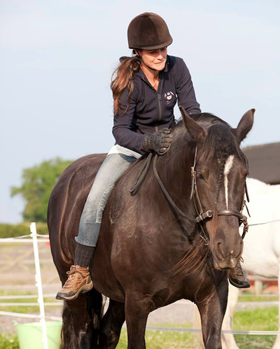
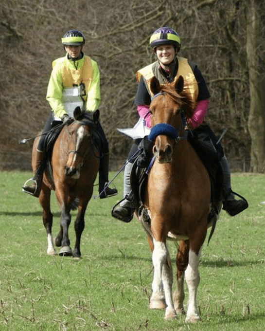
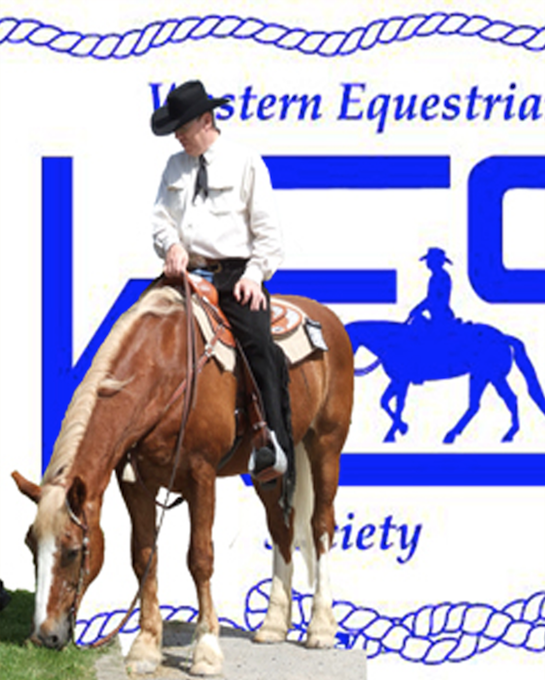

Upcoming Events


Classical In-Hand Training with Jo Hughes
This is a one-to-one session with Jo where you can develop your confidence
or knowledge on the groud or in the saddle through classical horse
training... Read More >

Le Trec @ CHAPs with Evie O’Keefe
Learn all about Le Trec obstacles and how to tackle them with Evie and
then have some fun with your horse on the Collingham Horse Adventure Park...
Read More >

Western Equestrian Society Clinic with David Hudspeth
Join in with fellow British Western riders and WES comittee member, David,
who will be guiding you around the CHAPs course and arena activities...
Read More >

5 May 2019
__________
Classical In-Hand Training with Jo Hughes
Jo Hughes is an empathetic and non-judgemental coach with more than 20
years of teaching experience in classical equitation gymnastic training and dressage.
Develop your confidence, skills and knowledge in a one-to-one hour session with
Jo - whether you want to keep both feet on the ground or address issues of balance
and suppleness from the saddle (or even do half and half), these lessons are for you.
You'll discover the basics of in-hand work, its benefits for you and your horse
and why it has been an integral part of classical horse training for centuries.
Perhaps you are frustrated that your horse can't halt straight or bend on a circle?
Are your transitions rushed or unresponsive? Does lateral work seem an impossible goal?
The answers to these and many other riding frustrations can be solved with a gentle,
understanding approach that aims to work with the natural horse rather than against it.
This work can be done without a bit and definitely without gadgets.
To book this event, or find out more information, please
contact us.
£35 for liveries
£45 for non-liveries
£10 for spectators

25 May 2019
__________
Le TREC @ CHAPs with Evie O'Keefe
Trec trainer Evie Priestley-O'Keefe will be back to give you instruction on
the obstacles you would find in a TREC competition.
Evie is a TREC trainer based in West Yorkshire who runs clinics in all aspects
of the sport of TREC, for all horses and riders - everyone is welcome!
Age, experience and confidence are never a barrier to joining in. Obstacle
sessions are great cross-training and life experience for any horse, and very
useful for improving the partnership between horse and rider.
The first hour of this session will be spent in the field on mobile obstacles
then you will be taken down to CHAPs (Collingham Horse Adventure Park) for
another hour of tuition. Afterwards, you are welcome to stay and have a play
before the next group comes down for their session.
A fun day, ideal for beginners new to TREC or for those more experienced to
develop better skills.
To book this event, or find out more information, please
contact us.
£38 for all
(3 small groups of 6
9am; 12pm; 3pm)

8 June 2019
__________
Western Equestrian Society Clinic with David Hudspeth
The Western Equestrian Society (WES) was formed in 1985 to promote the
discipline of Western Riding to the standard as practised in the United States.
We promote the sport for enthusiasts at all levels, whether pure beginners
or seasoned competitors. You can enjoy all of our ridden activities with ANY
breed of horse or pony. Members participate with Highland ponies, Welsh ponies,
Arabians as well as the various western breeds. In fact, you name the breed
and there's probably a WES member out there riding it in a western saddle!
During this clinic WES committee member, David Hudspeth, will work with you
and your horse both in the arena and on our CHAPs course.
Members and non-members from all areas are welcome to participate. Spectators
welcome. Please note hard hats (see hat standards required on WES website) and
third-party liability insurance are now mandatory under WES rules for all
clinics. All standards welcome. 9.30am start approx.
To book this event, or find out more information, please
contact us.
£65 for one hour/one rider
£47 for one hour/two riders
£35 for one hour/three riders